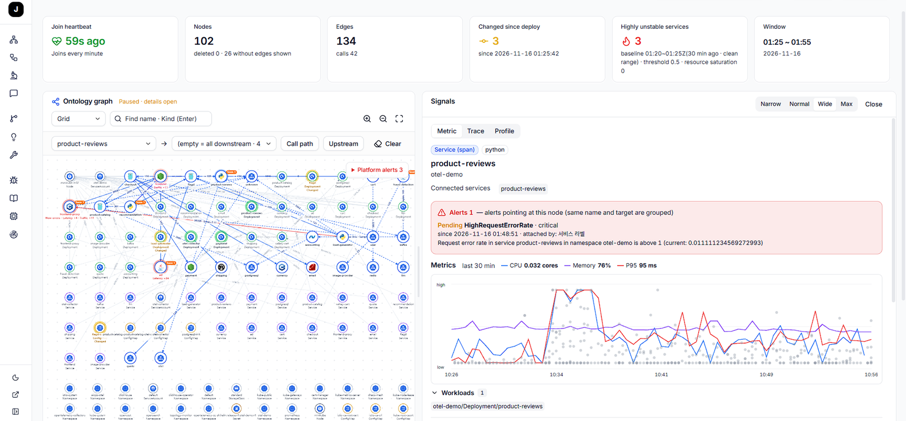
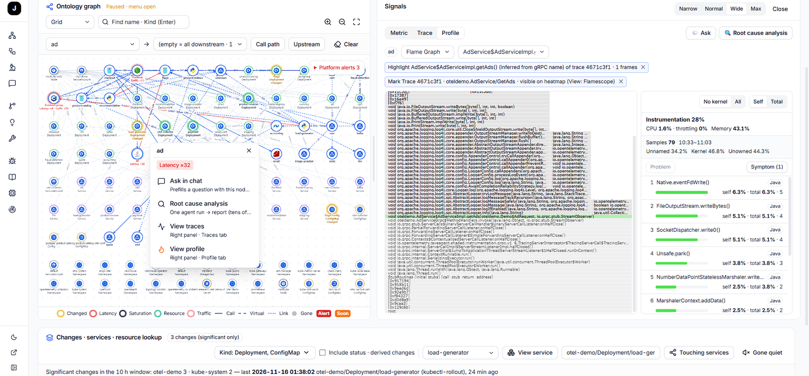
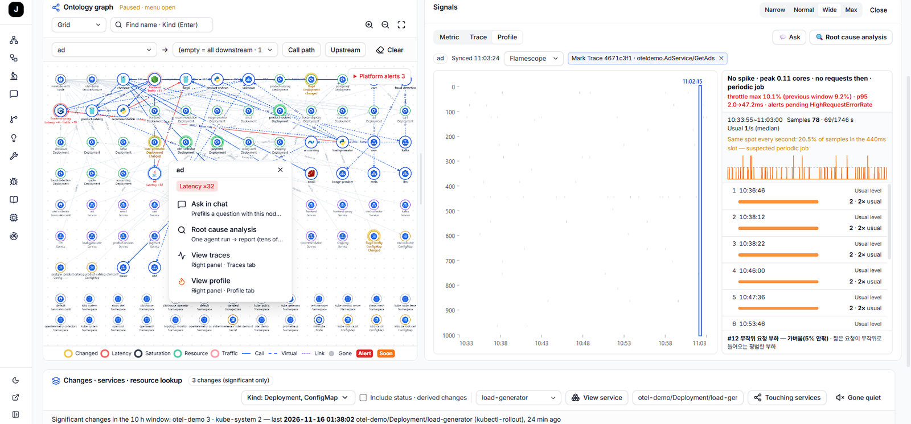
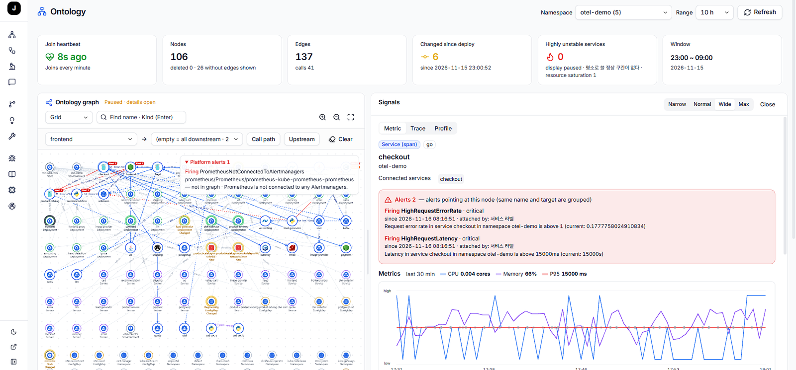
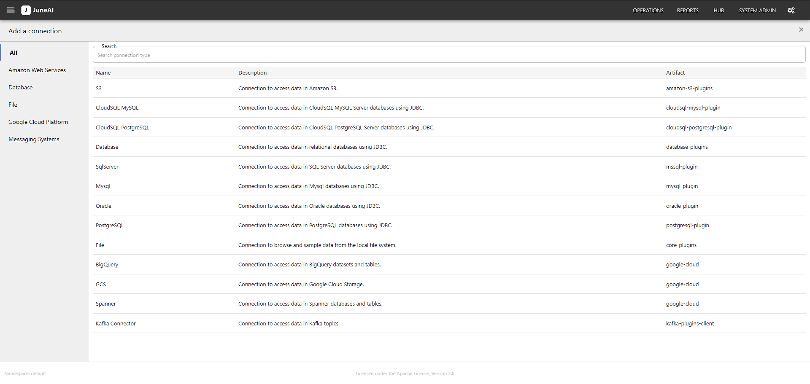

1. Observability and OpenTelemetry — and Their Limits
The foundation of the JuneAI ontology is Observability. It gathers the traces, metrics, and logs that running systems emit, and builds the ontology from their relationships. For standardized collection, OpenTelemetry is widely used.
But OpenTelemetry alone has clear limits in handling legacy and the many exceptional cases.
- Trace propagation breaks — once a call passes through certain stretches, the trace connection is severed, so the full path cannot be stitched into one.
- Asynchronous and event processing is hard — in message-queue and event-driven flows, following the causal relationships is tricky.
- Legacy instrumentation isn't supported — standard instrumentation doesn't reach traditional systems (mainframes, TP monitors, and the like).
✅ JuneAI has solved these problems. It reconnects broken trace propagation, follows asynchronous and event flows, and instruments down into the legacy internals. As a result, it can stand up an end-to-end connected ontology using Observability alone.






2. Ontologies Originally Presuppose a "Data Platform"
An ontology is fundamentally built on a data platform. In other words, without a data platform, building the ontology itself is difficult. A data-platform-based ontology requires pipelines, lakes, metadata, and lineage all at once.
The problem is that this is not simply a question of "is it technically possible."
- System expansion — new storage and compute infrastructure must be brought in.
- Securing people — data engineers and platform operators are needed.
- Schedule coordination and budgeting — complex decision-making involving multiple organizations follows.
Given the complex decisions and the cross-organizational collaboration and division of roles, introducing an ontology at the department level is all but impossible.
Even If You Already Have a Data Platform, It's Harder Still
Assuming a data platform is already running well, layering yet another ontology-based platform like Palantir on top is, if anything, even harder.
- Redundancy — functions overlap with the existing data platform.
- A different approach — a business-centric ontology approach has a different grain from the existing one.
- Organizational pushback — resistance from the existing data organization can arise.
In short, introducing an ontology involves not only technical issues but a range of considerations, including the organization.
3. Standing Up the Ontology Is Not the End
Introducing an ontology does not mean the task is done. If anything, what comes afterward is bigger.
In fact, the ontology is only one part. The direction JuneAI aims for is to analyze problems, support optimal decision-making, and have agents handle this whole process autonomously. The ontology is a very small part of the overall process — no more, no less.
- Before applying — consulting is needed to analyze problems, set priorities, and reflect them in the ontology.
- After applying — the follow-up work continues: using the ontology to identify problems, analyze causes, and simulate solutions.
Across the whole problem-solving process, building the ontology is only one part, while the follow-up work is far greater. So the question converges to one — "How can we make this complex ontology construction and problem-solving simple?"
4. JuneAI's Solution Is Quite Simple — Minimize the Data Platform, Use Observability First
JuneAI's answer is surprisingly simple. It minimizes the data platform. Because building a new data platform is costly and takes a long time, JuneAI prefers to first leverage the Observability that systems already emit. It stands up the ontology using observability alone wherever possible, and keeps the data platform only where it is truly necessary.
That doesn't mean the data platform is excluded. JuneAI also provides excellent data-platform tooling — for areas that observability alone can't reach, it brings in the data platform as a secondary option. In the end, what matters is combining instrumentation (observability) and the data platform appropriately, as the situation demands.
- No collaboration with the data organization is needed — a single department can take the lead in applying it.
- No separate budget or cross-organizational collaboration is needed — it reduces investment cost, development time, and communication overhead all at once.
- It builds on Observability first — minimizing heavy pipelines or lakes, it stands up the ontology from the signals that operations already leave behind.
- The data platform complements it as a secondary option — where truly needed, JuneAI's excellent data-platform tooling fills the gap. The key is combining instrumentation and the data platform appropriately.
- Autonomous Operations is a bonus — if needed, you can layer on AIOps-based Autonomous Operations too, and focus solely on agents equipped with per-task ontologies and harnesses.
| Category | 🏗️ Data-Platform-Based | 👁️ JuneAI Observability-Based |
|---|---|---|
| Foundation | Pipelines, lakes, metadata, lineage | Observability (traces, metrics, logs) |
| Organizations needed | Collaboration with the data organization is essential | A single department can lead on its own |
| Adoption | Practically impossible for a department alone | A single department can lead and make it happen |
| Budget and schedule | Expansion, staffing, and budgeting required | Fast, with no separate budget |
| Legacy and async | Standard OTel alone has limits | Reinforced down to propagation, async, and legacy |
| What comes next | Follow-up work is yet another big challenge | Focus on per-task ontology + harness agents |
5. JuneAI's Data-Platform Tooling — Combined When Needed
For areas that observability alone can't reach, JuneAI brings in the data platform as a secondary option. It provides excellent data-platform tooling for exactly this purpose.



6. In Summary — Lightweight, Department-Led, Right Away
- Observability is the foundation — it minimizes the data platform and first uses the signals operations already leave behind to stand up the ontology.
- The data platform can run alongside — where needed, JuneAI's data-platform tooling complements it, combined appropriately with instrumentation.
- It goes beyond OpenTelemetry's limits — JuneAI has reinforced broken trace propagation, async, and legacy instrumentation.
- It crosses organizational walls — a single department leads adoption, with no data-organization collaboration or separate budget.
- It cuts cost and time — it lowers investment cost, development time, and communication overhead together.
- It focuses on the essence — Autonomous Operations is a bonus; capability is concentrated on per-task ontologies and harness agents.
Standing up an ontology no longer has to be a company-wide project. On top of Observability, JuneAI stands up ontologies and agents lightly enough for a department to start right away.